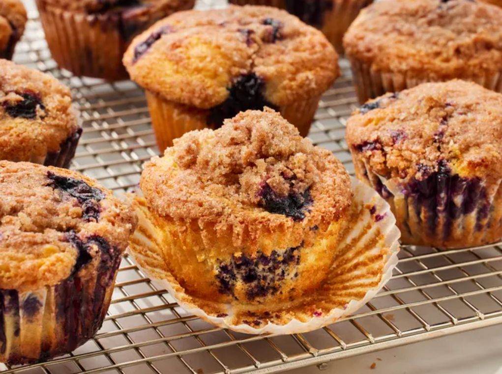

Home
Blueberry Muffins

Description
This blueberry muffin recipe makes eight extra large and yummy breakfast muffins with
a sugary-cinnamon crumb topping. I usually double the recipe and fill the muffin cups
just to the top for a wonderful, extra-generously-sized, deli-style muffin. Add extra
blueberries if you want!
Ingredients
Muffins
- 1 1/2 cups All-purpose flour
- 3/4 cup white sugar
- 2 tsp Baking powder
- 1/2 tsp Salt
- 1/3 cup Vegetable oil
- 1 Large egg
- 1/3 cup Milk
- 1 cup Fresh blueberries
Crumb Topping
- 1/2 cup White sugar
- 1/3 cup All-purpose flour
- 1/4 cup Butter, cubed
- 1 1/2 tsp ground cinnamon
Steps
- Preheat the oven to 400 degrees F (200 degrees C). Grease 8 muffin cups or line with paper liners.
- To make the muffins: Whisk flour, sugar, baking powder, and salt together in a large bowl.
- Pour oil into a small liquid measuring cup. Add egg and enough milk to reach the 1-cup mark;
stir until combined.
- Pour into flour mixture and mix just until batter is combined. Fold in blueberries; set batter aside.
- To make the crumb topping: Combine sugar, flour, butter, and cinnamon in a small bowl. Mix with a fork
until crumbly.
- Spoon batter into the prepared muffin cups, filling right to the top. Sprinkle with crumb topping.
- Bake in the preheated oven until a toothpick inserted in the center of a muffin comes out clean,
20 to 25 minutes.